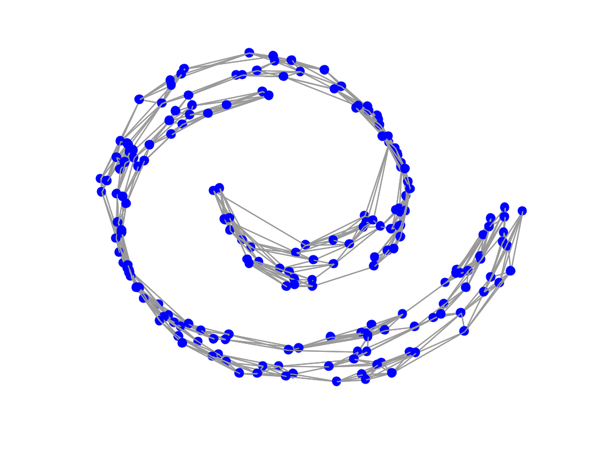

gsp_plot_graph(G); gsp_plot_graph(G,param);
| G | Graph structure or a cell of graph structures. |
| param | Optional variable containing additional parameters. |
non none
'gsp_plot_graph(G)' plots a graph (or multiple graphs) in 2D or 3D, using the adjacency matrix (G.A), the plotting coordinates (G.coords), the coordinate limits (G.plotting.limits), the edge width (G.plotting.edge_width), the edge color (G.plotting.edge_color), the edge style (G.plotting.edge_style), the vertex size (G.plotting.vertex_size), and the vertex color (G.vertex_color).
Additional parameters: * param.show_edges : Set to 0 to only draw the vertices. (default G.Ne < 10000 ) * param.num_clusters : Number of clusters for a clustered graph. * param.clusters : Cluster identities for a clustered graph. * param.cluster_colors : Cluster colors for a clustered graph. * param.cp : Camera position for a 3D graph
Example:
G = gsp_swiss_roll(200); gsp_plot_graph(G);